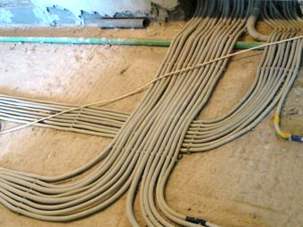

Качественный электромонтаж в Санкт-Петербурге и ленобласти, стаж 12 лет. Частный электрик, недорого и качественно.
Тел. 8 904 642 08 57 Николай.
Николай.

Сделать электрику в квартире.
Сайт частного электрика, работающего в СПБ и Московской области! Ниже на странице цены! Звоните! У меня хорошие скидки!
Электрика – это неотъемлемая часть нашей жизни. И поэтому вопрос: «как сделать электрику в квартире?», рано или поздно возникает у всех. Здесь есть два варианта: сделать самостоятельно, вооружившись советами из книг и интернета или пригласить профессионала.
Настоятельно не рекомендую Вам останавливаться на первом варианте, ведь электрика – это не то поприще, где можно экспериментировать.
Здесь даже небольшие погрешности могут стоить жизни. Рекомендую воспользоваться вторым вариантом и позвонить по телефону мне.
О себе:
Имею высшее техническое образование и пятнадцатилетний опыт работы, предлагаю полный спектр услуг по организации энергоснабжения. Замену старой электропроводки в квартире выполняю в соответствии с нормами и правилами техники безопасности. Гарантирую высокое качество услуг и оперативность выполняемых работ, а также высокий профессионализм и консультативную помощь. Все услуги выполняю аккуратно и в сжатые сроки. Перед началом заключаю договор с клиентом, по их окончании даю письменную гарантию. Работаю без предоплаты, расчет по факту выполненной электрики.
Сколько стоит сделать электрику в квартире.
|
Варианты квартиры. |
Цена за электрику квартиры под ключ в рублях. |
|
Однокомнатная квартира, электромонтаж под ключ. (телефон, интернет, телевизор, электромонтаж) |
32000 |
|
Двухкомнатной. |
39 000 |
|
Трёхкомнатной. |
45000 |
|
Четырехкомнатной. |
52000 |
|
Электрика в кухне под ключ. |
8500 |
|
Электромонтаж ванной комнаты. |
5000 |
|
Провести электрику в комнате под ключ. |
9000 |
Как сделать план электрики.
Что необходимо: кабель, розетки, распределительные и установочные коробки, выключатели, УЗО, автоматы, профессиональные инструменты, строительная смесь и план квартиры.
- оставляю проект, учитывая все пожелания заказчика: выбираем место для каждого бытового электроприбора, продумываем устройство освещения комнат;
- просчитываю количество розеток и выключателей и определяю их высоту (рекомендованное расстояние между ними не более 3 м);
- составляю смету и сделаю закупку необходимых материалов (с запасом в 10%);
- далее рассчитываю суммарную мощность потребителей. Один автомат питает 5 розеток. Их общая нагрузка не должна превышать 5 кВт;
- для осветительных приборов обычно выбираю автомат на 16 А и кабель с сечением 1,5 мм, для розеток соответственно – 25 А и провод с сечением 2,5 мм;
- на каждую линию ставлю отдельный автомат. Если в квартире повышенная влажность использую дифференциальный автоматический переключатель или устройство защитного отключения (УЗО). Сделаю так для дополнительной защиты от поражения электротоком, если возникнет нарушение изоляции;
- распределительные коробки устанавливаю в легкодоступных местах, это тоже очень важно.
Небольшой совет: сделать электрику в квартире советую целиком и сразу. Рекомендую использовать однотипные провода (либо медные, либо алюминиевые).
Схема моей работы:
- заявку на вызов мастера Вы можете оставить на сайте или позвонить лично по телефону;
- согласовываю и уточняю детали, определяюсь с датой предварительного осмотра;
- осуществляю бесплатный выезд. Уточняю объесть работ по электрике в квартире и заключаю договор.
Доступные цены и высокое качество работ – вот основные моменты, благодаря которым мой рабочий график расписан на два месяца вперед. Понимая, что лучшая реклама – это рекомендации, дорожу своей репутацией. Может это не важно, но имею лицензию на все электромонтажные работы, плачу налоги и делаю отчисления в соц. фонды.
Фото электрики в квартире.
|  |  |
Обращайтесь, помогу!

Сколько будут стоить материалы.
Расценки на электропроводку.
Электромонтаж в доме.
Замена электропроводки в двухкомнатной квартире?.
Сколько стоит сделать внутреннюю проводку?.
Установка люстр и светильников.
Электромонтаж проводов в бане.